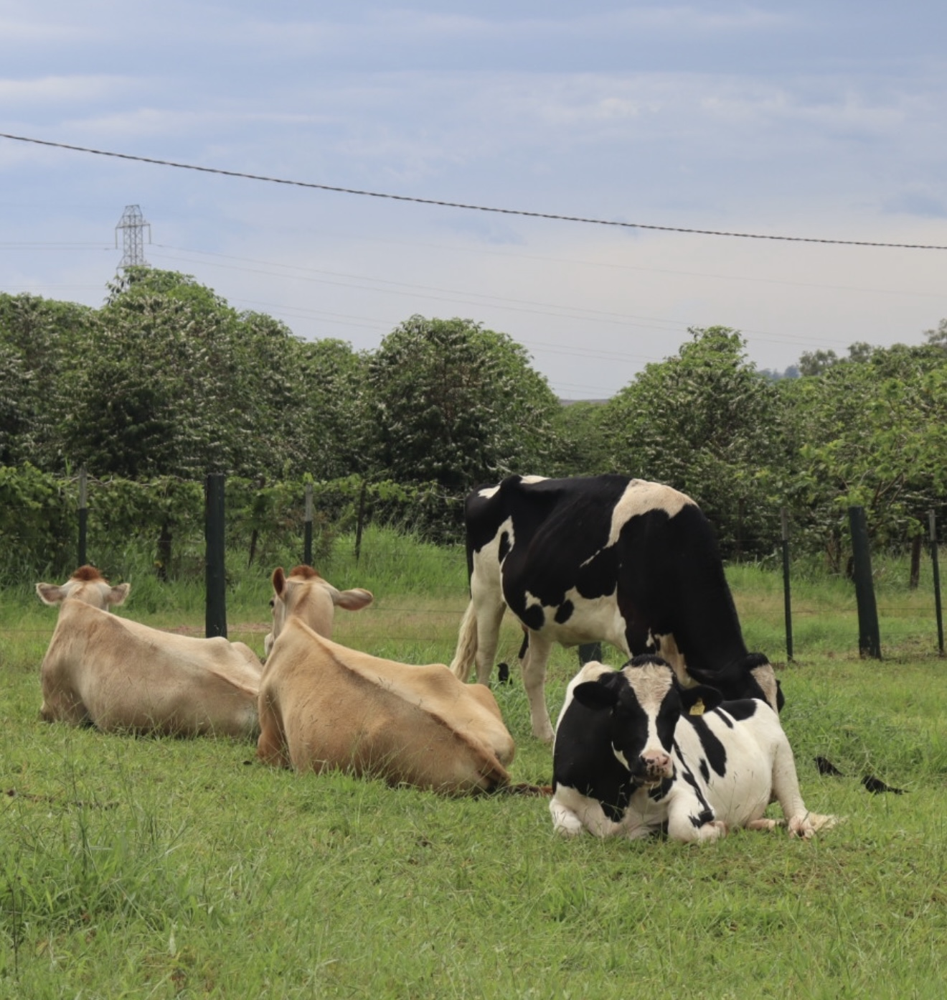

Gestão completa de rebanhos de corte e leite — da identificação individual ao controle sanitário, reprodutivo e nutricional.
Os bovinos são a base da pecuária brasileira. No VetPrática, cada animal tem ficha individual com identificação, histórico sanitário e produtivo, permitindo decisões rápidas no campo e no consultório.

Nome, numeração, sexo, raça e histórico completo de cada cabeça.
Vacinas, vermifugações e tratamentos com lembretes automáticos.
Controle de cio, IATF, prenhez e projeção de nascimentos.
Doses precisas por peso, com conversão automática de unidades.
Cadastre-se gratuitamente e comece a registrar seus animais hoje mesmo.
Começar agora →